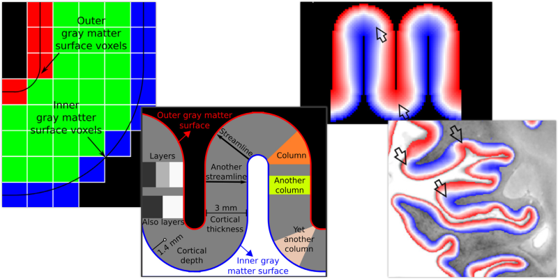
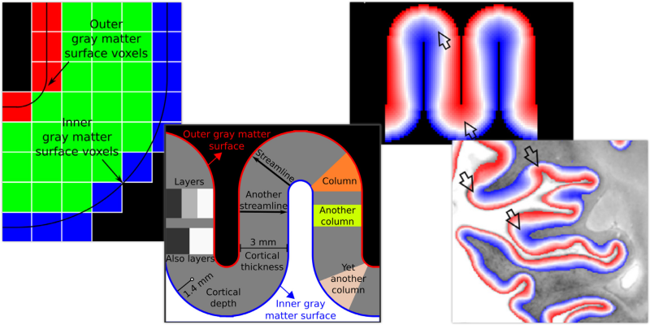
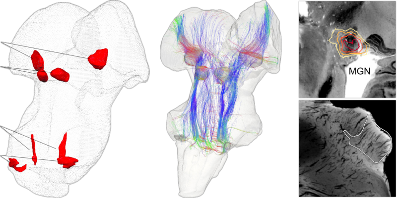
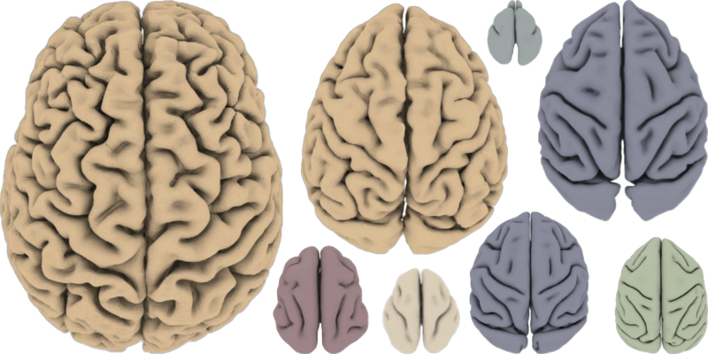
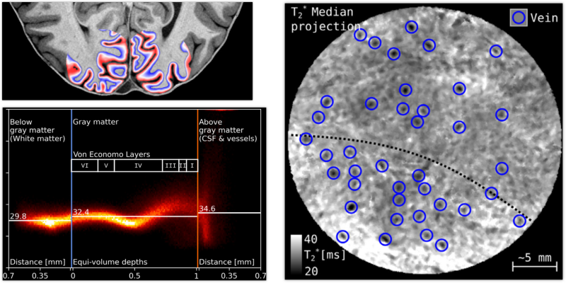
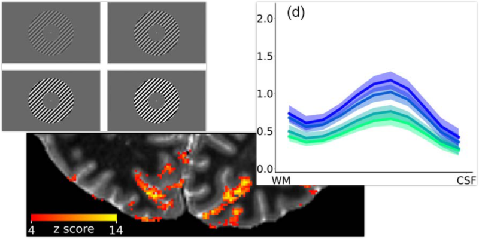
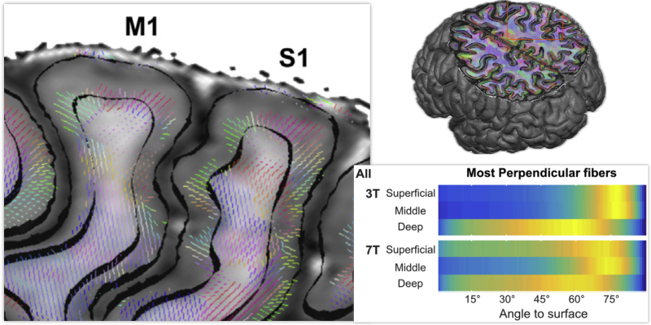

LayNii: A software suite for layer-fMRI
Huber, Poser, Bandettini, ..., Goebel, Gulban
Neuroimage (2021)
PDF
I design software that push the boundaries of ultra–high field MRI and make mesoscopic brain imaging more accessible, usable, and impactful.
I am a Researcher and Software Engineer at Brain Innovation in Maastricht, The Netherlands, where I contribute to cutting-edge neuroimaging solutions that translate academic research into real-world applications. I hold a PhD in Cognitive Neuroscience from Maastricht University (2020), where I specialized in high-resolution brain imaging using anatomical, functional, and diffusion MRI, with a particular focus on the cortex, subcortex, and deep brainstem regions in living humans at 7 Tesla.
My academic journey has been deeply interdisciplinary—spanning neuroscience, MR physics, and software engineering. A core theme throughout my work is bridging the gap between complex academic insights and practical, user-friendly tools for the neuroimaging community.
At Brain Innovation, I carry this mission forward by combining scientific rigor with thoughtful software design, empowering researchers and clinicians to visualize, analyze, and interpret brain data with precision and ease. Notably, I developed LayNii, one of the most widely used layer (f)MRI analysis tools, featuring advanced 3D geometry processing wrapped in an intuitive interface.
Recognizing the importance of accessibility and open science, I also share my expertise through YouTube tutorials and online content—helping to rapidly disseminate my algorithms and analysis pipelines to a global audience.
Even though I am primarily based in industry, I remain actively engaged with the academic community. I regularly publish peer-reviewed articles both independently and in collaboration with international research teams. I am a highly active member of the human brain imaging field, delivering invited talks, contributing to scientific conferences, and leading hackathons projects.
Currently, my work lies at the intersection of advanced MRI acquisition and next-generation neuroimaging analysis. I develop tools that unlock the full potential of ultra–high field MRI, pushing the boundaries of how we visualize and understand the living human brain.
I’m passionate about building usable, impactful scientific tools—and fostering collaborations that translate neuroscience from the lab bench to real-world impact.
ORCID: 0000-0001-7761-3727
LayNii: A software suite for layer-fMRI
Huber, Poser, Bandettini, ..., Goebel, Gulban
Mapping the human subcortical auditory system using histology, post mortem MRI and in vivo MRI at 7 T
Sitek*, Gulban*, ..., Ghosh, De Martino
Evolution of neocortical folding: A phylogenetic comparative analysis of MRI from 34 primate species
Heuer, Gulban, Bazin, ..., Toro
Mesoscopic in vivo human T2* dataset acquired using quantitative MRI at 7 Tesla
Gulban, Bollmann, Huber.,... Kay, Ivanov
Cortical depth profiles of luminance contrast responses in human V1 and V2 using 7 T fMRI
Marquardt, Schneider, Gulban, ..., Uludag
Cortical fibers orientation mapping using in-vivo whole brain 7 T diffusion MRI
Gulban, De Martino, ..., Ugurbil, Lenglet